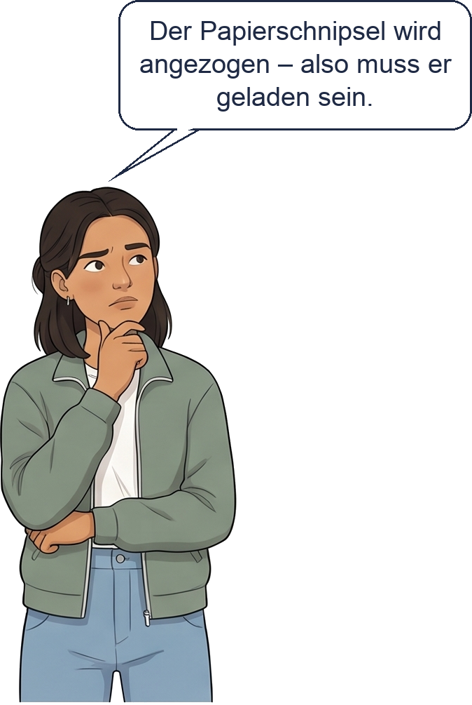

Wo sind wir? A Ladung und Stromkreis · B Stromstärke und Spannung · C Schaltungen · D Widerstand · E Energie und Kosten · F Wirkungen und Gefahren
✎ allein · zu Beginn der 2. Stunde · auf dieser Seite (ca. 10 min)
Lies das Material und löse a) bis e). Wer fertig ist, macht f). Danach vergleichst du mit der Kontrolle.
Material
|
a) Die Unterseite der Wolke ist … ★
☐ positiv geladen ☐ negativ geladen ☐ neutral
b) Zwei Wolken ziehen nebeneinander. Beide Unterseiten sind negativ geladen. Die Wolken … ★
☐ ziehen sich an ☐ stoßen sich ab ☐ beeinflussen sich nicht
c) Ist das eine Beobachtung oder eine Erklärung? Kreuze an. ★★
| Aussage | Beobachtung | Erklärung |
| Es blitzt. | ☐ | ☐ |
| Die Unterseite der Wolke hat Elektronenüberschuss. | ☐ | ☐ |
| Es donnert. | ☐ | ☐ |
| Beim Blitz springen Elektronen von der Wolke zum Boden. | ☐ | ☐ |
d) Den Boden hat niemand gerieben. Trotzdem wird er positiv. Erkläre. ★★
Die Elektronen an der Unterseite der Wolke … Die Elektronen im Boden …
Hilfe: Checkliste und Satzanfänge →
________________________________________________
________________________________________________
________________________________________________
________________________________________________
________________________________________________
 | e) Stimmt, was Nina sagt? ★★ ☐ ja, immer ☐ nein, nie ☐ nur manchmal ________________________________ ________________________________ ________________________________ ________________________________ ________________________________
|
f) Wischt man einen Bildschirm mit einem trockenen Tuch ab, ist er danach geladen. Warum sammelt sich dann besonders viel Staub darauf? Erkläre mit + und −. ★★★
Hilfe: Checkliste und Satzanfänge →
________________________________________________
________________________________________________
________________________________________________
________________________________________________
________________________________________________
Löse zuerst alles hier auf der Seite. Dann öffne die Kontrolle und gib deine Antworten ein – du bekommst sofort eine Rückmeldung. Am Ende siehst du eine Übersicht: Screenshot machen und hier einfügen. Falsches verbesserst du in Grün.
Screenshot: Übersicht Kontrolle |